Hadoop安装
2025-09-26
安装
访问hadoop官网中的文档
Apache Hadoop 3.3.5 – Hadoop: Setting up a Single Node Cluster.
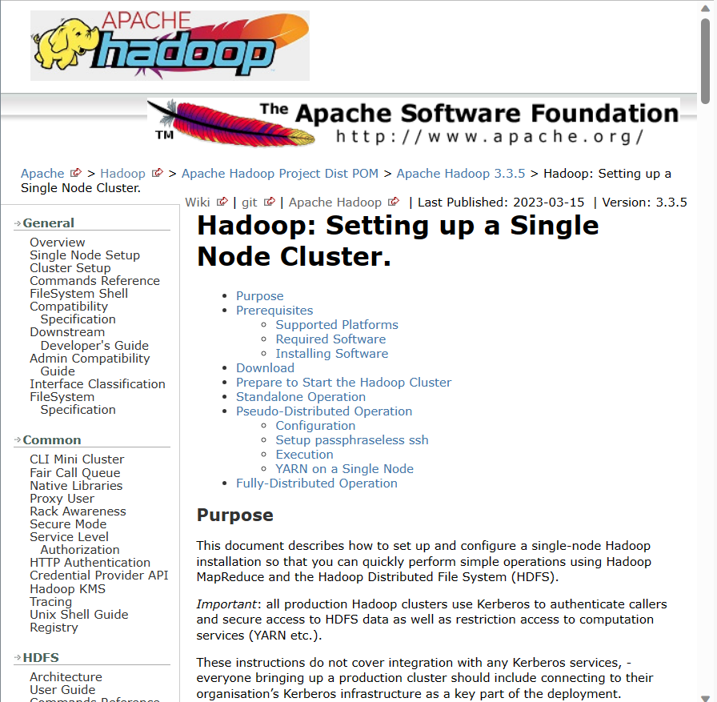
到opt下的soft下，并放入hadoop
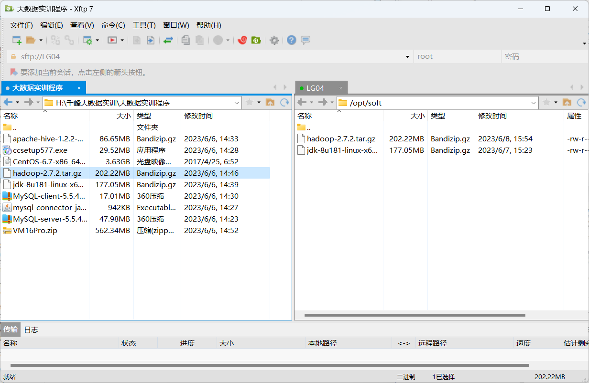
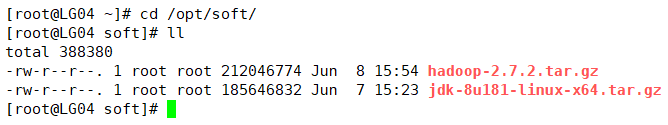
解压到/opt/apps
tar -zxvf ./hadoop-2.7.2.tar.gz -C /opt/apps/
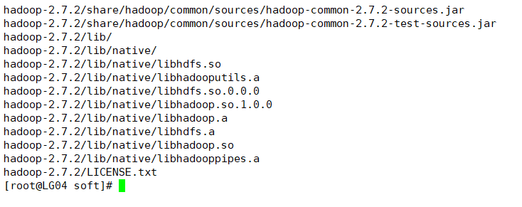
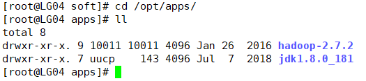
配置文件
到/opt/apps/hadoop-2.7.2/etc/hadoop下编辑hadoop-env.sh
添加jdk地址 /opt/apps/jdk1.8.0_181/
vim /opt/apps/hadoop-2.7.2/etc/hadoop/hadoop-env.sh
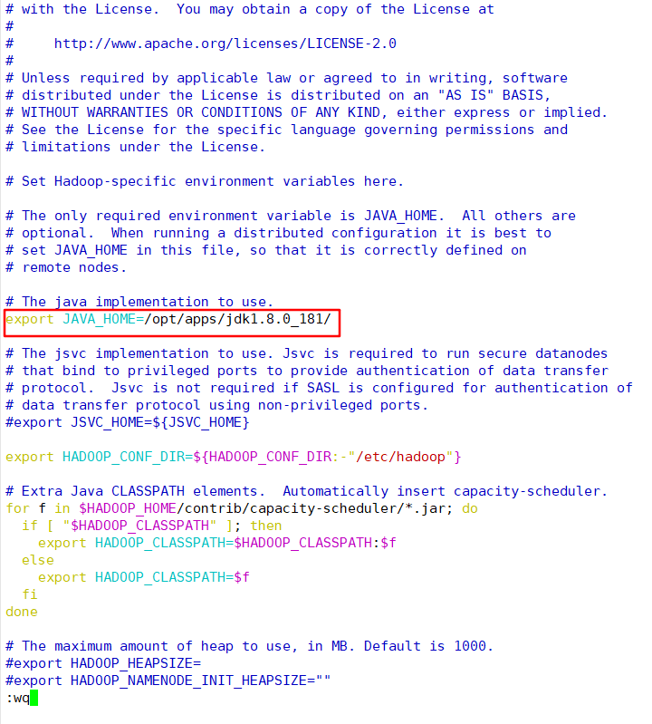
编辑core-site.xml
HDSF服务在LG04的9000端口上，hadoop.tmp.dir，临时文件夹的路径
vim core-site.xml
<property>
<name>fs.defaultFS</name>
<value>hdfs://LG04:9000</value>
</property>
<property>
<name>hadoop.tmp.dir</name>
<value>/opt/apps/hadoop-2.7.2/data/tmp</value>
</property>
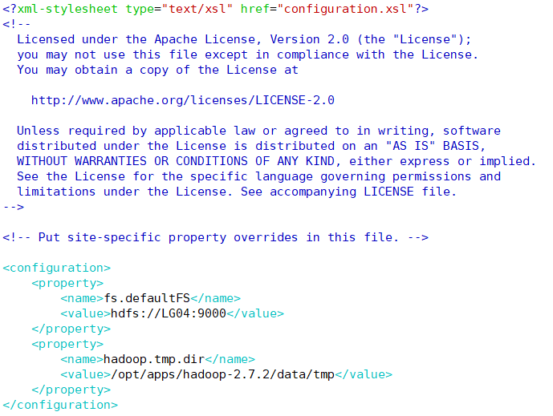
编辑hdfs-site.xml
dfs.replication的值设为3 ，代表3个副本，网页部署到LG05的50090端口上，
vim hdfs-site.xml
<property>
<name>dfs.replication</name>
<value>3</value>
</property>
<property>
<name>dfs.namenode.secondary.http-address</name>
<value>LG05:50090</value>
</property>
<property>
<name>dfs.namenode.http-address</name>
<value>LG04:50070</value>
</property>
<property>
<name>dfs.permissions.enabled</name>
<value>false</value>
</property>

改名并编辑mapred-site.xml
mv ./mapred-site.xml.template ./mapred-site.xml
vim ./mapred-site.xml
<property>
<name>mapreduce.framework.name</name>
<value>yarn</value>
</property>
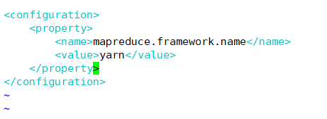
修改yarn-site.xml
vim yarn-site.xml
<configuration>
<!-- Site specific YARN configuration properties -->
<property>
<name>yarn.nodemanager.aux-services</name>
<value>mapreduce_shuffle</value>
</property>
<property>
<name>yarn.resourcemanager.hostname</name>
<value>LG06</value>
</property>
<property>
<name>yarn.nodemanager.resource.memory-mb</name>
<value>2048</value>
</property>
<property>
<name>yarn.log-aggregation-enable</name>
<value>true</value>
</property>
<property>
<name>yarn.log-aggregation.retain-seconds</name>
<value>604800</value>
</property>
</configuration>
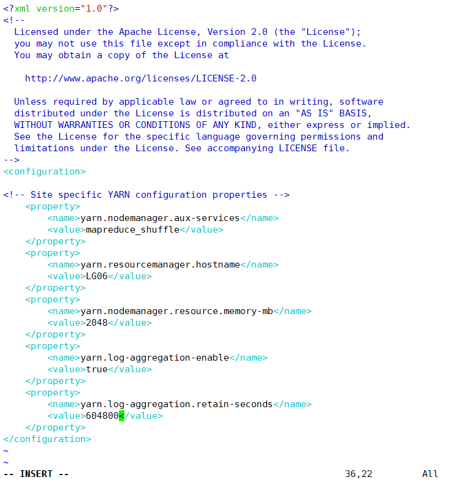
修改slaves
vim slaves
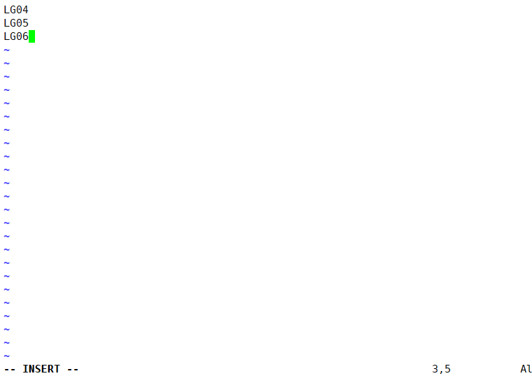
发送hadoop给LG05、LG06（在apps目录下）
scp -r ./hadoop-2.7.2/ LG05:/opt/apps/
scp -r ./hadoop-2.7.2/ LG06:/opt/apps/
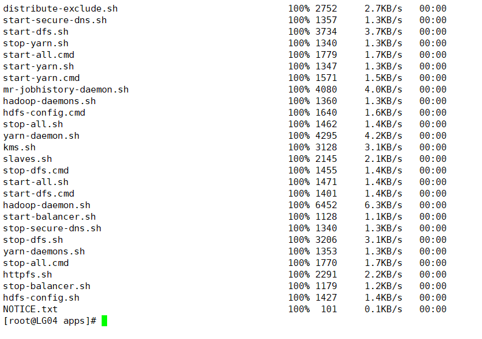
格式化
关闭防火墙（三台都要）
service network status
service iptables status
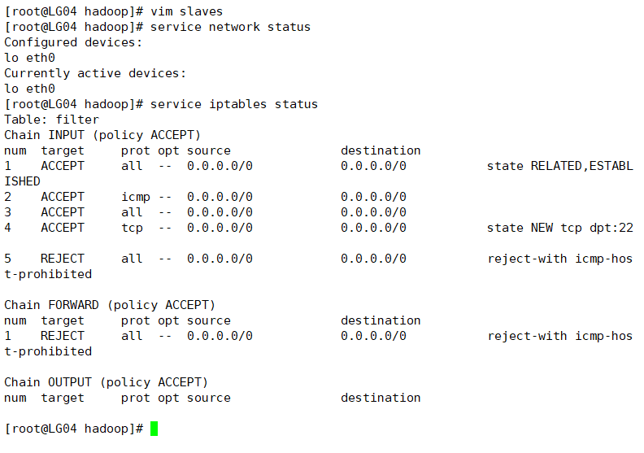
service iptables stop
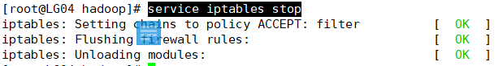
chkconfig iptables off //关机后也保持防火墙关闭
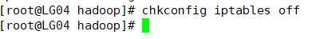
到/opt/apps/hadoop-2.7.2/bin目录下格式化
./hdfs namenode -format
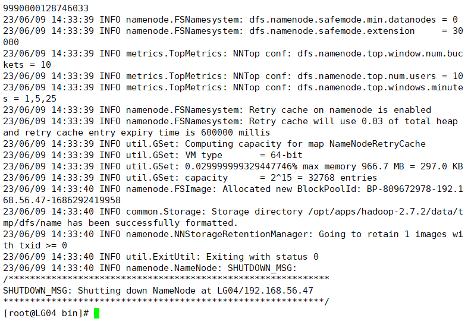
启动/opt/apps/hadoop-2.7.2/sbin/start-dfs.sh
/opt/apps/hadoop-2.7.2/sbin/start-dfs.sh
jps
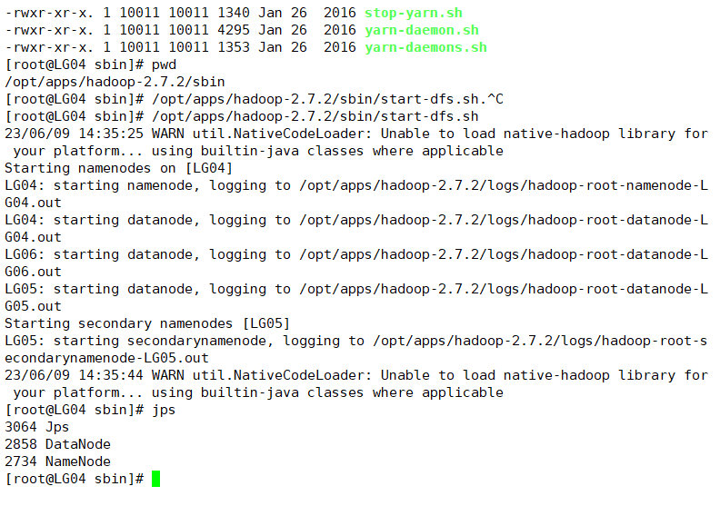
在LG05
jps
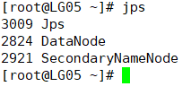
在LG06 /opt/apps/hadoop-2.7.2/sbin/目录下执行./start-yarn.sh
/opt/apps/hadoop-2.7.2/sbin/start-yarn.sh
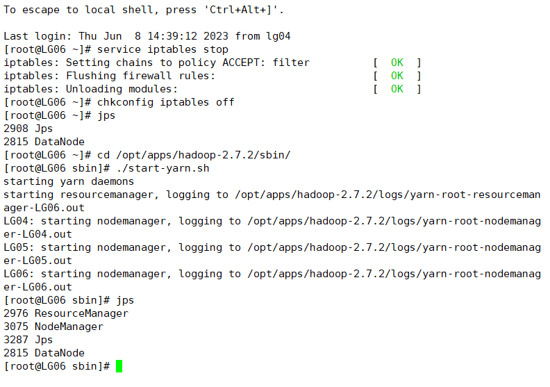
返回LG05
jps
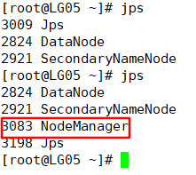